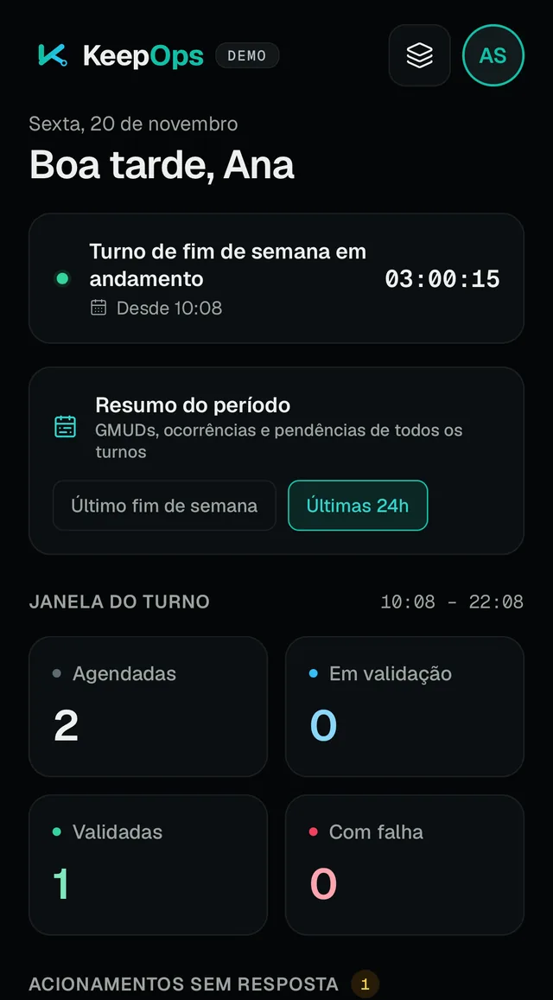
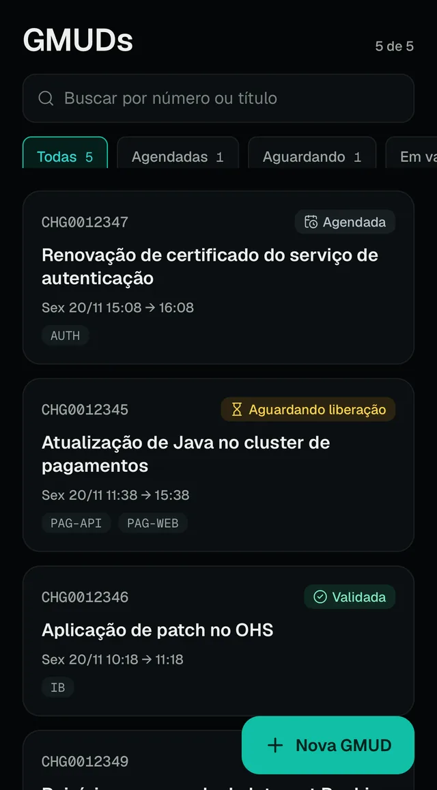
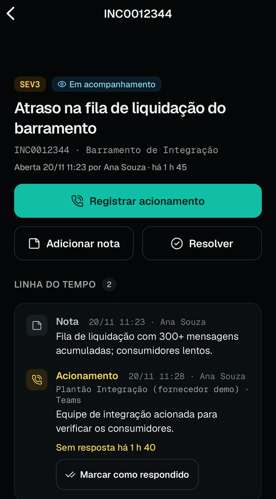
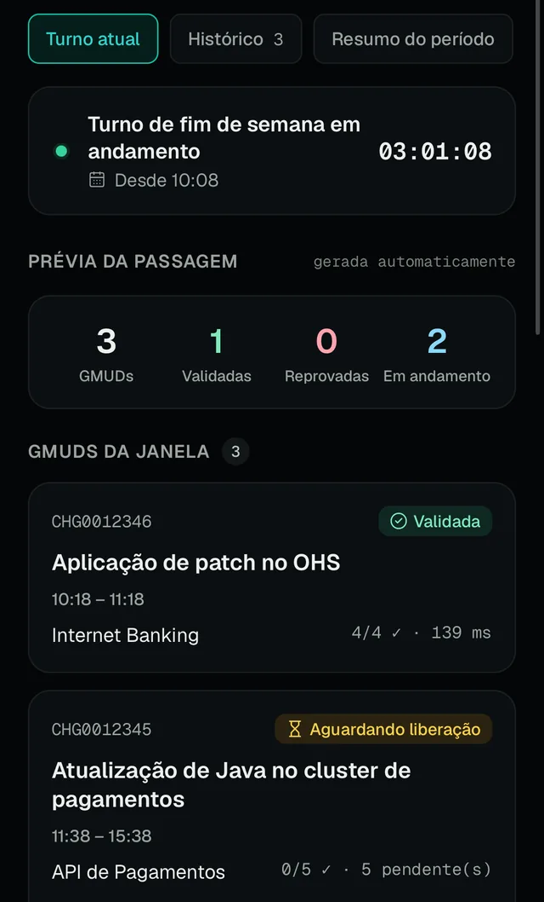
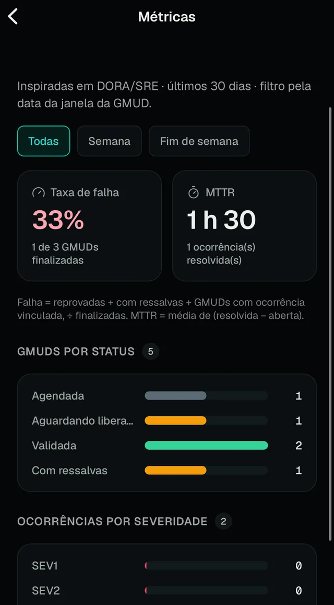

O plantão termina.O contexto fica.
KeepOps é o caderno de validação do plantonista que acompanha mudanças de infraestrutura de madrugada e no fim de semana — e entrega ao próximo turno uma passagem que se escreve sozinha.

Nasceu de uma madrugada de plantão
Trabalhei com sustentação de infraestrutura em ambiente financeiro: plantões noturnos, janelas de mudança, patching de servidores de aplicação. Mudanças em sistemas críticos acontecem quando ninguém está usando — de madrugada e no fim de semana.
Quem valida está sozinho. Espera o fornecedor liberar, testa cada aplicação à mão, aciona quem executou quando algo falha e anota tudo em chats e planilhas. No fim do turno, a passagem é uma mensagem. Na segunda-feira, a equipe reconstrói o fim de semana a partir de fragmentos.
Quais mudanças aconteceram, o que falhou, quem foi acionado e o que ficou para quem vem depois?
Feito para três pessoas que nunca estão no mesmo turno
O KeepOps não substitui ferramentas de ITSM: ele é de quem valida, não de quem executa. Números de mudança e de incidente entram como texto.
Ana, plantonista
Valida com uma mão, às 3h. Recebe o checklist pronto, roda o health check, abre a ocorrência do passo que falhou e encerra o turno sem reescrever nada.
João, próximo turno
Entende o estado da operação em menos de um minuto e confirma que recebeu. As pendências abertas já aparecem no Início dele.
Marina, equipe da semana
Na segunda, abre o resumo do fim de semana com todos os turnos numa tela e assume as pendências que sobraram.
Turno a turno
- O executor avisa e a Ana libera a GMUD para validação
- Checklist da aplicação + health check antes × depois
- Passo reprovado vira ocorrência; o acionamento fica registrado
- A passagem é gerada dos registros e compartilhada
- João confirma o recebimento
Fim de semana → equipe da semana
- Vários turnos registram GMUDs no sábado e no domingo
- Marina abre o resumo de sexta 19h a segunda 7h
- Vê GMUDs por turno, ocorrências e acionamentos sem resposta
- Assume uma pendência e conclui com uma nota
O app por dentro
Telas reais do KeepOps rodando no iPhone, com dados fictícios. Tema escuro para a madrugada, alvos de toque grandes e status sempre com cor, ícone e texto.

Cada mudança com um status que se lê de relance
A GMUD anda de agendada para aguardando liberação, em validação e validada. Cada aplicação vinculada traz o checklist pronto, e o health check mede a latência antes e depois da mudança.

Falhou? Vira ocorrência — e o acionamento ganha um cronômetro
O passo reprovado abre a ocorrência já ligada à GMUD. Cada acionamento conta o tempo sem resposta até alguém marcar que respondeu, e tudo entra numa linha do tempo.

A passagem se escreve sozinha
Enquanto o turno anda, a prévia se monta com os registros. Ao encerrar, o app congela um retrato e o próximo turno confirma que recebeu. É isso que o João lê às 7h:
GMUDs da janela
- CHG0012345 Atualização de Javareprovada
- API de Pagamentos · 120 ms → HTTP 503
- CHG0012346 Patch no OHSvalidada
- CHG0012347 Certificadoagendada
Ocorrências
- SEV2 INC0012345 · executor acionadosem resposta
Pendências para a equipe
- Revalidar a API após restartsem responsável
- Reprocessar fila do barramentocom Marina

Métricas de SRE sem planilha
Taxa de falha de mudanças e MTTR dos últimos 30 dias, inspiradas em DORA, com filtro de semana e fim de semana — porque é no fim de semana que o plantão sente a diferença.
Do problema ao app, na ordem em que um software nasce
Cada etapa terminou com o app rodando no celular e um commit no GitHub. O fluxo inteiro funcionou de ponta a ponta primeiro; o polimento veio depois.
Descobrir
- 01Perceber a dor vivida no plantão
- 02Definir o problema em quatro perguntas
- 03Personas e jornadas
Definir
- 04Requisitos e critérios de aceite
- 05Escopo P0/P1/P2 e plano de corte
- 06Cronograma em etapas e riscos
- 07Stack justificada item a item
Construir
- 08Ambiente do zero
- 09Arquitetura em camadas
- 10Banco, segurança e seed
- 11Marca e design system
- 12Etapas incrementais
- 13Testes e validação
Entregar
- 14Versionamento e IA como par
- 15Diagnóstico de problemas reais
- 16Segurança e privacidade
- 17Vídeo, apresentação e portfólio
Telas nunca falam direto com o banco
Tela → hook → service → Supabase. Toda regra de negócio vive em funções puras, sem tela e sem banco — e são elas que os testes cobrem.
O que este projeto me ensinou
| Produto | Transformar uma dor vivida em problema, proposta de valor e posicionamento — inclusive dizendo o que o app não é. |
|---|---|
| Requisitos | Personas, jornadas, requisitos funcionais e não funcionais, regras de negócio e critérios de aceite que viraram testes. |
| Gestão | Priorização P0/P1/P2, plano de corte escrito, etapas pequenas com critério de pronto, diário de decisões. |
| Arquitetura e banco | Camadas, funções puras, modelagem relacional, RLS, triggers, migrations e seed reproduzível. |
| Design | Marca, logo, paleta derivada da logo, design tokens, design system e acessibilidade (contraste, alvos de toque, leitor de tela). |
| Qualidade e DevOps | Typecheck, lint e testes num comando só; Git com um commit por etapa; ambiente documentado. |
| Troubleshooting | Ler o erro até a causa raiz: "preset não encontrado" era, na verdade, uma biblioteca do sistema faltando no Windows. |
| IA como par | A IA escreveu e testou o código; eu defini o produto, validei cada etapa no celular e tomei as decisões. |
O que vem depois
- Testes rodando no GitHub Actions a cada mudança
- App instalável com EAS
- Health checks agendados no servidor
- Notificação para o próximo plantonista
- Resumo do fim de semana automático às segundas
- Foto de evidência e período personalizado
Oi, eu sou a Sara
Analista de infraestrutura DevOps e quase engenheira de software — formatura na UCB em dezembro de 2026.
Passei dois anos como consultora da Oraex Cloud Consulting, alocada num cliente do setor financeiro: patching de Oracle WebLogic e OHS, janelas de mudança, remediação de vulnerabilidades e plantões noturnos em Linux (RHEL), AIX e Windows Server. Antes, estagiei na Polícia Federal desenvolvendo sistemas web com Oracle APEX, Python e MySQL.
O KeepOps junta essas duas metades: a vivência de quem segura a operação de madrugada e a engenharia para transformar isso em produto. Estou em busca de oportunidades em DevOps, Cloud e SRE.
- Linux (RHEL)
- AIX
- Windows Server
- Oracle WebLogic
- OHS
- Python
- Shell Script
- Ansible
- Zabbix
- ServiceNow
- Qualys
- React Native
- TypeScript
- PostgreSQL